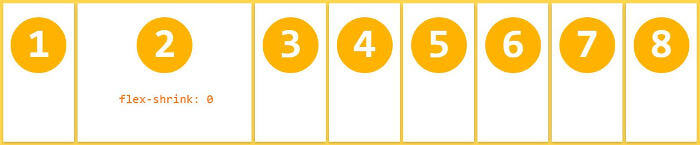

Flexbox中文API
Flexbox布局（Flexible Box)模块旨在提供一个更加有效的方式制定、调整和分布一个容器里的项目布局，即使他们的大小是未知或者是动态的。（这里我们称为Flex）。
Flex布局主要思想是让容器有能力让其子项目能够改变其宽度、高度(甚至顺序)，以最佳方式填充可用空间（主要是为了适应所有类型的显示设备和屏幕大小）。Flex容器会使子项目（伸缩项目）扩展来填满可用空间，或缩小他们以防止溢出容器。
最重要的是，Flexbox布局方向不可预知，他不像常规的布局（块就是从上到下，内联就从左到右）。而那些常规的适合页面布局，但对于支持大型或者杂的应用程序（特别是当他涉及到取向改变、缩放、拉伸和收缩等）就缺乏灵活性。
注：Flexbox布局最适合应用程序的组件和小规模的布局，而网格布局 更适合那些更大规模的布局。
一、Flex布局是什么？
Flex是Flexible Box的缩写，意为"弹性布局"，用来为盒状模型提供最大的灵活性。
任何一个容器都可以指定为Flex布局。
.box{
display: flex;
}
行内元素也可以使用Flex布局。
.box{
display: inline-flex;
}
Webkit内核的浏览器，必须加上-webkit前缀。
.box{
display: -webkit-flex; /* Safari */
display: flex;
}
二、基本概念
采用Flex布局的元素，称为Flex容器（flex container），简称"容器"。它的所有子元素自动成为容器成员，称为Flex项目（flex item），简称"项目"。
容器默认存在两根轴：水平的主轴（main axis）和垂直的交叉轴（cross axis）。主轴的开始位置（与边框的交叉点）
做 main start，结束位置叫做 main end；交叉轴的开始位置叫做 cross start，结束位置叫做 cross end。
项目默认沿主轴排列。单个项目占据的主轴空间叫做 main size，占据的交叉轴空间叫做 cross size。
三、容器的属性
- flex-direction
- flex-wrap
- flex-flow
- justify-content
- align-items
- align-content
3.1 flex-direction属性 决定主轴的方向（即项目的排列方向）
.box {
flex-direction: row | row-reverse | column | column-reverse;
}
- row（默认值）：主轴为水平方向，起点在左端。
- row-reverse：主轴为水平方向，起点在右端。
- column：主轴为垂直方向，起点在上沿。
- column-reverse：主轴为垂直方向，起点在下沿。
3.2 flex-wrap属性 flex-wrap属性定义，如果一条轴线排不下，如何换行
.box{
flex-wrap: nowrap | wrap | wrap-reverse;
}
- nowrap（默认）：不换行。

- wrap：换行，第一行在上方。

- wrap-reverse：换行，第一行在下方。

3.3 flex-flow flex-flow属性是flex-direction属性和flex-wrap属性的简写形式，默认值为row nowrap。
.box {
flex-flow: || ;
}
3.4 justify-content属性 justify-content属性定义了项目在主轴上的对齐方式。
.box {
justify-content: flex-start | flex-end | center | space-between | space-around;
}
- flex-start（默认值）：左对齐
- flex-end：右对齐
- center： 居中
- space-between：两端对齐，项目之间的间隔都相等。
- space-around：每个项目两侧的间隔相等。所以，项目之间的间隔比项目与边框的间隔大一倍。
3.5 align-items属性 定义项目在交叉轴上如何对齐。
.box {
align-items: flex-start | flex-end | center | baseline | stretch;
}
- flex-start：交叉轴的起点对齐。
- flex-end：交叉轴的终点对齐。
- center：交叉轴的中点对齐。
- baseline: 项目的第一行文字的基线对齐。
- stretch（默认值）：如果项目未设置高度或设为auto，将占满整个容器的高度。
3.6 align-content属性 定义了多根轴线的对齐方式。如果项目只有一根轴线，该属性不起作用
.box {
align-content: flex-start | flex-end | center | space-between | space-around | stretch;
}
- flex-start：与交叉轴的起点对齐。
- flex-end：与交叉轴的终点对齐。
- center：与交叉轴的中点对齐。
- space-between：与交叉轴两端对齐，轴线之间的间隔平均分布。
- space-around：每根轴线两侧的间隔都相等。所以，轴线之间的间隔比轴线与边框的间隔大一倍。
- stretch（默认值）：轴线占满整个交叉轴。
四、项目的属性
- order
- flex-grow
- flex-shrink
- flex-basis
- flex
- align-self
4.1 order属性 定义项目的排列顺序。数值越小，排列越靠前，默认为0
.item {
order: 0;
}
4.2 flex-grow属性 定义项目的放大比例，默认为0，即如果存在剩余空间，也不放大。
.item {
flex-grow: 0; /* default 0 */
}
如果所有项目的flex-grow属性都为1，则它们将等分剩余空间（如果有的话）。如果一个项目的flex-grow属性为2，其他项目都为1，则前者占据的剩余空间将比其他项多一倍。
4.3 flex-shrink属性 定义了项目的缩小比例，默认为1，即如果空间不足，该项目将缩小
.item {
flex-shrink: 0; /* default 1 */
}

如果所有项目的flex-shrink属性都为1，当空间不足时，都将等比例缩小。如果一个项目的flex-shrink属性为0，其他项目都为1，则空间不足时，前者不缩小。负值对该属性无效。
4.4 flex-basis属性 定义了在分配多余空间之前，项目占据的主轴空间（main size）。浏览器根据这个属性，计算主轴是否有多余空间。它的默认值为auto，即项目的本来大小。
.item {
flex-basis: *length* | auto; /* default auto */
}
它可以设为跟width或height属性一样的值（比如350px），则项目将占据固定空间。
4.5 flex属性
flex属性是flex-grow, flex-shrink 和 flex-basis的简写，默认值为0 1 auto。后两个属性可选。
.item {
flex: none | [ <'flex-grow'> <'flex-shrink'>? || <'flex-basis'> ]
}
该属性有两个快捷值：auto (1 1 auto) 和 none (0 0 auto)。
建议优先使用这个属性，而不是单独写三个分离的属性，因为浏览器会推算相关值。
4.6 align-self属性 align-self属性允许单个项目有与其他项目不一样的对齐方式，可覆盖align-items属性。默认值为auto，表示继承父元素的align-items属性，如果没有父元素，则等同于stretch。
.item {
align-self: auto | flex-start | flex-end | center | baseline | stretch;
}
该属性可能取6个值，除了auto，其他都与align-items属性完全一致。
实例